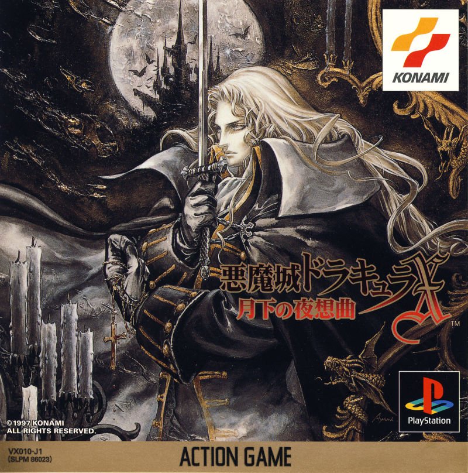
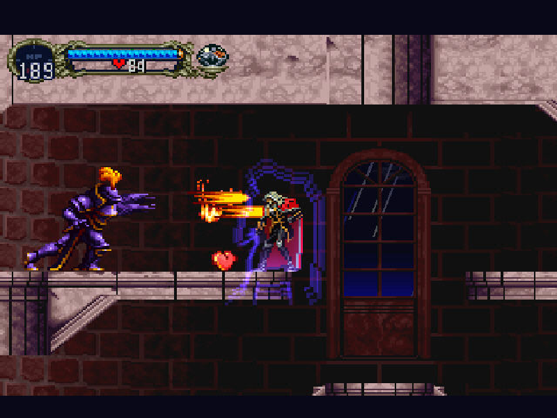
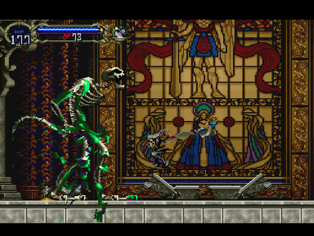
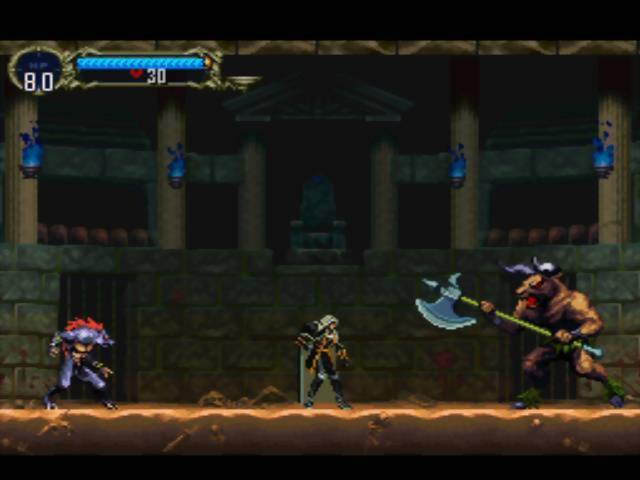
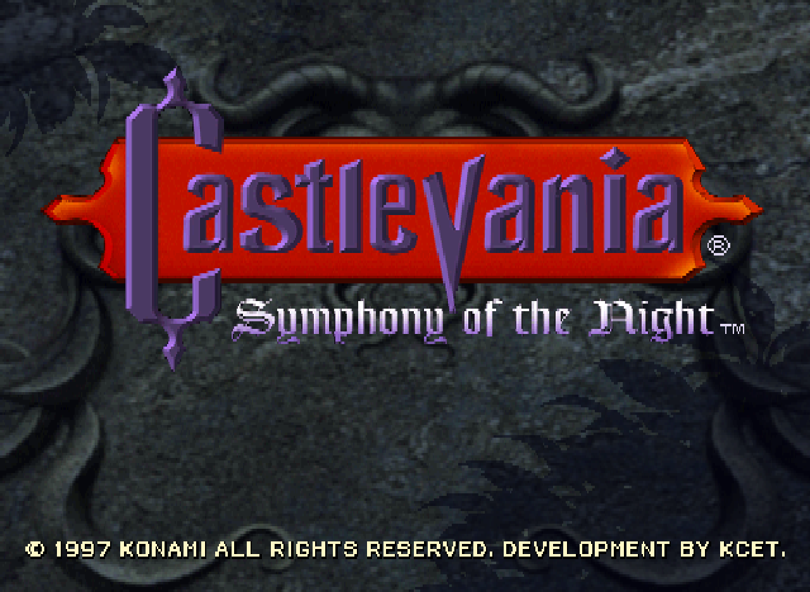
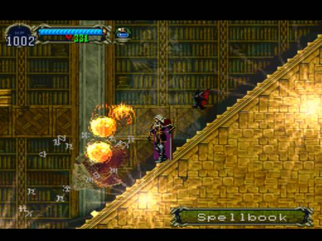
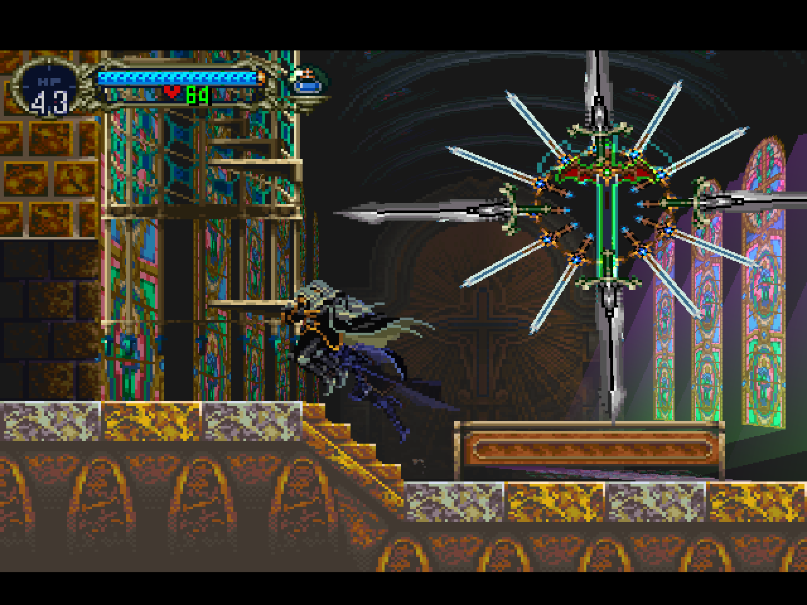
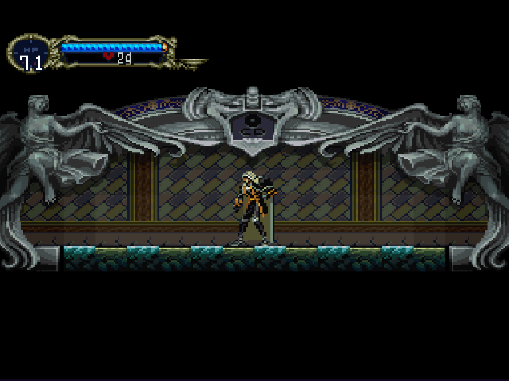
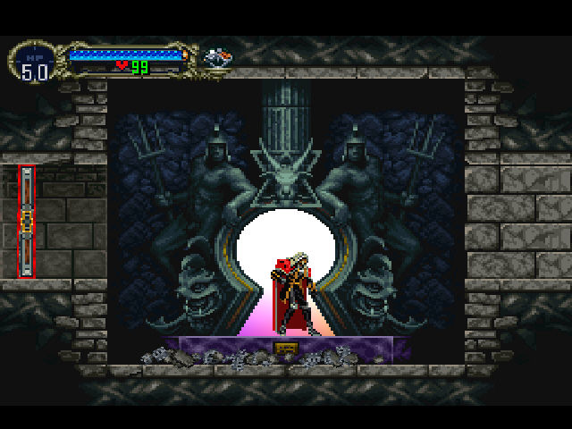

Castlevania: Symphony of the Night
Castlevania: Symphony of the Night é um jogo de ação-aventura 2D desenvolvido e distribuído pela Konami em 1997. Ele é o 13º título da série Castlevania, sendo o primeiro a ser lançado para o console PlayStation e a sequência cronológica de Castlevania: Rondo of Blood.
Symphony of the Night foi uma obra importante para a série Castlevania, recebendo ampla aclamação crítica e posteriormente aparecendo em listas de melhores jogos de todos os tempos de várias publicações. Ele levou a série a um novo patamar, diferente dos jogos de plataforma "estágio-por-estágio" dos títulos anteriores, introduzindo um novo estilo de jogabilidade com elementos de RPG, algo que foi simulado por muitos de seus sucessores. O desenvolvimento destas características pode ser atribuído ao diretor do jogo, Koji Igarashi, que também foi responsável por estabelecer o título como parte do cânon da série, em uma tentativa de entrelaçar vários fins de histórias na cronologia. Outros membros notáveis do time de produção incluem a designer de personagens Ayami Kojima e a compositora Michiru Yamane.
Em 1998, Symphony of the Night foi convertido para o Sega Saturn pela Konami Computer Entertainment Nagoya, sendo tal conversão lançada somente para o Japão. Em 2006, foi anunciado que uma conversão para o Xbox 360 da versão do PlayStation seria distribuída via Xbox Live Arcade. Uma versão idêntica à do PlayStation foi lançada em 19 de julho de 2007 através da PlayStation Network, compatível com o PlayStation 3 e o PlayStation Portable. Ainda em 2007, a Konami anunciou que uma conversão seria incluída em Castlevania: The Dracula X Chronicles para o PSP. Uma versão contendo Symphony of the Night em conjunto com Rondo of Blood foi lançada para o PlayStation 4 em 26 de outubro de 2018. Em março de 2020, o jogo foi disponibilizado nas plataformas Android e iOS.
Enredo
Symphony of the Night inicia durante o final de Rondo of Blood, onde Richter Belmont confronta e derrota o Conde Dracula. Quatro anos depois, em 1796, Richter some e o castelo de Dracula reaparece. Alucard chega ao castelo para destruí-lo, encontrando-se com Maria Renard, que lutou ao lado de Richter e está em sua procura. Alucard encontra Richter, que afirma ser o novo lorde do castelo. Convencido que Richter está sob controle de alguma outra entidade, Maria pede que Alucard não o machuque, entregando-lhe os Holy Glasses, que permitem que ele veja a verdade por trás das ilusões. Alucard confronta Richter e descobre que ele planeja ressuscitar Dracula para que ambos possam lutar pela eternidade. Durante a luta, Alucard quebra o feitiço que controla Richter, e o servo de Dracula, Shaft, aparece e afirma que Dracula será ressuscitado em pouco tempo.

- 
Alucard deixa Richter e Maria para confrontar Shaft, aventurando-se pelo Castelo Invertido em sua procura. Shaft revela que planejou acabar com a ameaça do clã Belmont ao controlar um deles e forçá-los a lutar entre si.Após derrotar Shaft, Alucard enfrenta seu pai, que jura acabar com a humanidade porque sua esposa, Lisa, foi executada como uma bruxa. Alucard recusa ajudar seu pai em sua busca por vingança, e o derrota. Alucard diz que Dracula foi derrotado múltiplas vezes por ter perdido sua habilidade de amar após a perda de Lisa, e que as últimas palavras de sua mãe foram uma declaração de seu amor eterno, e uma súplica para que não tenha ódio e não cause mal à humanidade. Antes de morrer, Dracula pede perdão à Lisa, e despede-se de seu filho.
Ao escapar do castelo em colapso, Alucard encontra-se com Maria e Richter. Maria demonstra alívio por ele ter escapado, enquanto Richter se culpa por ter causado a luta de Alucard com seu próprio pai. Alucard diz a Richter que "tudo que é preciso para o triunfo do mal é que os bons homens não façam nada", e desaparece do mundo devido à sua linhagem de sangue amaldiçoada.
Screenshots
- 
- 
- 
- 
- 
- 
- 
- 